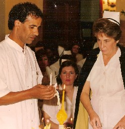
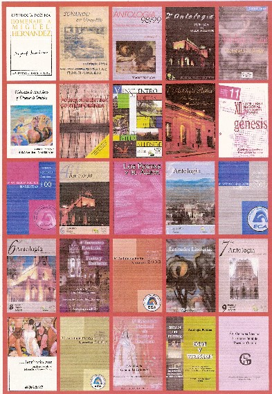
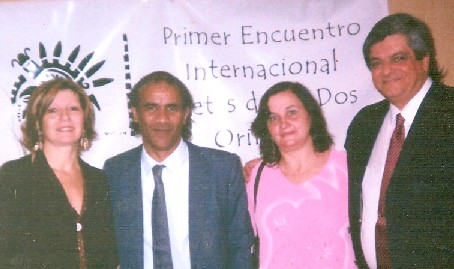
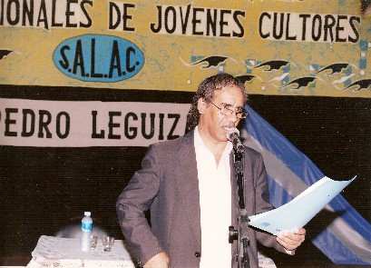
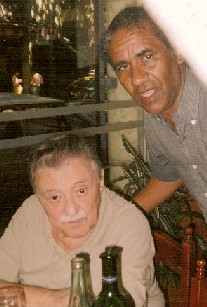
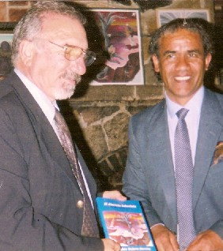

"La fábrica de sueños"
| Rubén Techera Moreira (Tabaré)- Uruguayo radicado en Argentina |
"Fui analfabeto hasta los 31 años, en
que comencé a cursar la Escuela Primaria. Mi padre me abandonó
junto a mi madre y hermanos,
cuando tenía 12 años y debí salir a trabajar para paliar
la situación, pues mamá trabajaba de mucama y no alcanzaba...
Vendí " de todo" en los colectivos y las calles...desde caramelos
hasta diarios.
Soñaba vivir en Buenos Aires, la "gran" capital del país
vecino, lo que logré en los años 70 y aquí también
tuve variadas ocupaciones no
calificadas, pero inquieto como fui siempre, transité por Brasil y volví
a Montevideo, mi ciudad natal; sólo por un tiempo, ya que regresaría
a
Córdoba, la localidad de Alta Gracia.
Corría el año
75, cuando conocí a la madre de mi hijo y esta maratón de
vida, se concretaría también Contar con el libro propio parecía una utopía...hasta que conoció a su esponsor, el golfista Angel "pato" Cabrera que financió la edición de "El discreto laberinto" (de sus estados de ánimo) que se trata de una obra poética inspirada en el amor.. |
 |
 |
(Imagen de la izquierda: Algunos Libros en los cuales ha participado) "El llanto o la risa dependen de esos estados y son tan diversos que forman un laberinto. Así encaré mi libro, como un laberinto que encierra mis sentimientos" Actualmente
y desde 1986, reside en la localidad de Villa Allende de la Provincia
de Córdoba,- Argentina- y su hijo,
Washington, es el ilustrador de sus plaquetas literarias y de este primer
libro.
Te amo Te amo. Te amo
|
¡Claro que te amo! Y si no te amara Y así, |

Foto:Encuentro de poetas Uruguay-Argentina, de las dos orillas, marzo 2006. Reseña curricular Actualmente cuenta con 58 años de edad y es Licenciado en enfermería (Universidad Nacional de Córdoba). Ha publicado 28 antologías por invitación o por concurso y en periódicos de diversas localidades así como sus poesías se difunden en programas radiales. Publicó 6 plaquetas literarias y ha participado en importantes eventos de escritores.Ha recibido un primer premio en Cuento y otro en Prosa; cuarto premio y cuatro menciones en el mismo género. En poesía un segundo puesto y siete menciones. Es socio e integra comisiones de diversos grupos literarios. |
 |
Símbolo de libertad Origen, de ser libre en el pasado, |
Audaz, tu galopar en la distancia, La onda expansiva de tu fortaleza,
|
 |
 |
(Foto izquierda: Con el actual Intendente de Villa Allende quien presenta su libro) "¿Quién
soy?: Un soñador, a quien no le da vergüenza serlo ni se arrepiente por ello. Alguien que cree absolutamente en el AMOR (así con mayúsculas). Que le gusta disfrutarlo y siente verdadero placer en brindarlo igualmente. Además que le gusta aceptarlo ya con un gesto, una caricia, una palabra, una sonrisa o simplemente compañía. Alguien que está íntimamente
comprometido con lo social, responsable en lo laboral, sensible en lo
familiar, buscando compartir todo esto íntimo con los demás...
Alguien que luchó obstinadamente durante décadas para perder
los miedos que lo acosaron tanto tiempo (hambre, frío, soledad)
...
|